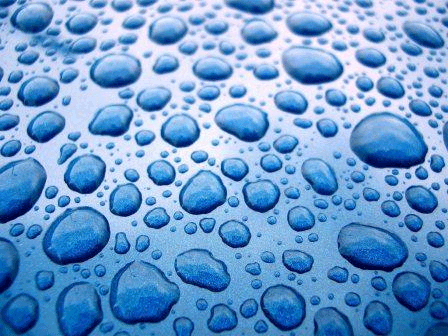

Чище вода только после очистки: почему это факт
Многие полагают, что если вода прозрачная, не имеет запаха и взята из «чистого» источника или современного водопровода, то она безопасна. Однако современная экология и состояние инженерных сетей говорят об обратном: сегодня только профессиональная многоступенчатая очистка может гарантировать абсолютную безопасность воды.
Иллюзия чистоты: что скрывает прозрачная вода?
Прозрачность воды — это лишь визуальный параметр. Она не говорит об отсутствии следующих угроз:
- Растворенные химикаты. Нитраты, пестициды и остатки промышленных выбросов абсолютно прозрачны и не имеют вкуса, но накапливаются в организме.
- Микробиологические угрозы. Бактерии и вирусы не видны глазу, но могут вызвать серьезные инфекции, особенно у людей с ослабленным иммунитетом.
- Тяжелые металлы. Свинец, ртуть и кадмий могут попадать в воду из труб и почвы, оставаясь незаметными до момента проявления симптомов отравления.
Как работает профессиональная очистка Crystal Water?
Мы не просто «фильтруем» воду, мы создаем её заново, удаляя всё лишнее и оставляя только полезное.
1. Удаление физических примесей
Механические фильтры убирают ржавчину, песок и взвеси, которые создают мутность воды.
2. Борьба с химией
Сорбированные угольные фильтры эффективно связывают и удаляют хлор и органические загрязнения.
3. Молекулярный барьер
Система обратного осмоса работает как сито с микроскопическими порами, через которые проходит только чистая молекула H2O. Всё остальное — от бактерий до солей жесткости — отсекается.
Результат: вода, которой можно доверять
В итоге вы получаете продукт, который не просто «выглядит чистым», а является таковым на химическом и биологическом уровнях. Это база для здоровья, энергии и долголетия.
Перестаньте сомневаться в качестве своей воды
Выбирайте эталонную чистоту, подтвержденную технологиями. Заказывайте доставку очищенной воды в Бровары и Киев от Crystal Water.
Заказать чистую воду